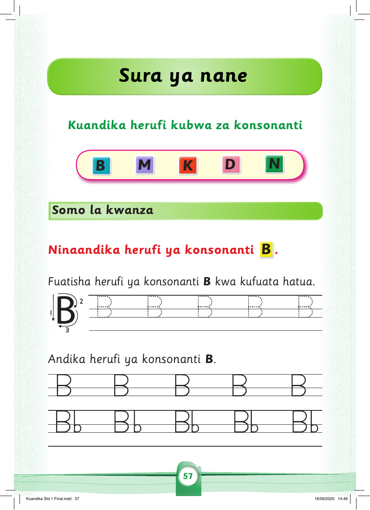

Sura ya nane
Kuandika herufi kubwa za konsonanti
B
M
K
D
N
Somo la kwanza
Ninaandika herufi ya konsonanti B.
Fuatisha herufi ya konsonanti B kwa kufuata hatua.
B B B B B
Andika herufi ya konsonanti B.
B
B
B
B
B
Bb
Bb
Bb
Bb
Bb